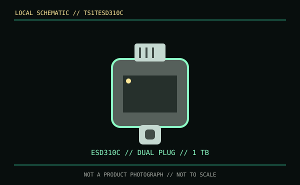

[ REMOVABLE MEDIA // MODEL-SPECIFIC RECORD ]
Transcend ESD310C 1 TB (TS1TESD310C)
The TS1TESD310C is a 1 TB assembled portable SSD with integrated USB Type-A and Type-C plugs. It is a solid-state drive product rather than a USB flash-drive SKU or enclosure-only accessory.

IDENTIFICATION: Confirm ESD310C and TS1TESD310C; ESD310 includes multiple connector/color and capacity variants.
Format, capacity and compatibility
| Product / part ID | Transcend ESD310C, 1 TB, TS1TESD310C |
|---|---|
| Interface | USB 3.2 Gen 2 (10 Gb/s), with integrated USB Type-A and USB Type-C connectors. The plug must connect to a USB data-capable host; avoid mechanical strain from the compact body. |
| NAND / performance | Transcend identifies 3D NAND and rates maximum read/write at up to 1,050/950 MB/s. These are product maxima, not guaranteed sustained transfer rates. |
| Endurance | The cited Transcend specifications do not publish a TBW rating for this portable SKU. |
| Compatibility | Transcend lists desktop/laptop and supported mobile hosts. Check USB OTG, filesystem, OS and power support for phones/tablets; some devices may not power or mount external storage. USB 3.2 Gen 2 is needed for peak speed. |
| Product caveat | The direct-plug design has no detachable cable for reach; the compact metal body can exert leverage on a port. This is not a generic enclosure or a removable thumb drive despite the similar shape. |
Handling and preservation
Do not bump or twist the drive while connected, use safe removal and keep the connectors clean. Check actual capacity and verify written data with checksums. Maintain separate backup copies; portable NAND storage does not guarantee long-term unpowered retention.
Sources and standards
- Transcend — ESD310 product specificationsManufacturer specifications for capacity, connector design, 3D NAND and performance.
- Transcend — ESD310 product sheet (PDF)Manufacturer model-family technical and operating information.
- USB-IF — USB 3.2 specifications overviewUSB interface-generation reference.